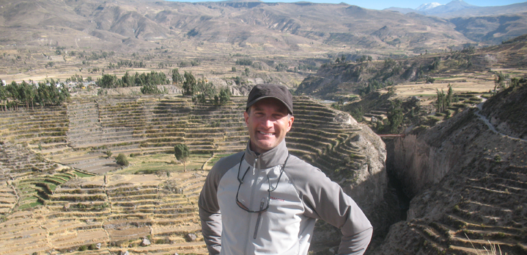

Contact

Steven Wernke
Professor and Chair, Department of Anthropology
Director, Spatial Analysis Research Laboratory
Director, Vanderbilt Initiative for Interdisciplinary Geospatial Research
email: s.wernke[at]vanderbilt.edu